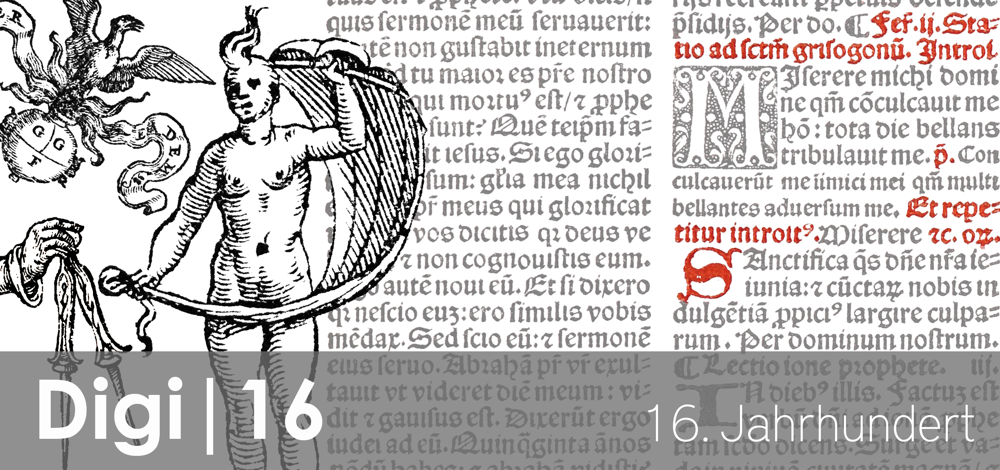

- Übersicht
- Beschreibung
- Links
- Kontakt
Die Universitätsbibliothek Graz verwahrt ca. 13.000 Titel gedruckt im 16. Jahrhundert auf. Diese Werke stammen zum überwiegenden Teil aus den säkularisierten Beständen steirischer Klöster die an die Jesuitenuniversität in Graz übergeben werden mussten. Der restliche Teil spiegelt den Bestandsaufbau und die wissenschaftliche Ausrichtung der damals noch sehr jungen Universität wider.
Ausgangslage:
UB Graz: Alle bekannten Werke wurden in den vergangenen Jahren zentral an einem Standort (Rara 1) versammelt. Die Katalogsituation und die damit einhergehenden Recherchemöglichkeiten waren für eine Benutzung nicht mehr zeitgemäß. Großteils waren die Werke nur in handgeschriebenen Zettelkatalogen des 19. Jahrhunderts verzeichnet. Viele Werke (besonders beigebundene Titel) wurden in der Vergangenheit bibliographisch nicht als Einheit erkannt oder ob des geringen Seitenumfangs nicht als aufnahmewürdig angesehen.
Neben dem bibliographischen Zettelkatalog bewahrt die Abteilung für Sondersammlungen mehrere maschinschriftliche Nebenkarteien zu den Themen: Besitzgeschichte, Einbandkunde, Exlibris u.ä.
Ziel war es all diese Informationen in Zukunft benutzerfreundlich im Bibliotheksportal mit einer Recherche abrufbar zu machen.
International: Seit mehreren Jahrzehnten gibt es besonders im deutschprachigen Raum mit dem VD 16 und im italienschsprachigen Raum mit edit 16 große nationale Projekte bibliographische Nachschlagewerke aufzubauen. An diese Bibliographien sind wissenschaftliche Projekte mit ihren Beständen gebunden und zitieren auf die einzelnen individuellen Einträge und Werkbeschreibungen. Durch die zunehmende Digitalisierung ist es jetzt auch möglich über die Titelblätter und Fingerprintmethoden hinaus, vorliegende Exemplare sehr exakt miteinander zu vergleichen. Diese Möglichkeiten ermöglichen tiefgehende Analysen zu den Themen Drucklegung, Geschäftsgebarung und Firmenpolitik im 16. Jahrhundert.
Projekt:
- Entwicklung eines Kategorienschemas nach RDA für bibliographische Erschließung: Da es für die Katalogisierung historischer Drucke noch keine Durchführungsanleitungen im Rahmen der RDA für den DACH-Raum gibt, wurde dieses Projekt herangezogen einen Leitfaden (= Kategorienschema) zu entwickeln. Diese Leitfaden wurde im Rahmen der Retrokatalogisierung getestet und den nationalen und übernationalen Gremien zur Verfügung gestellt. Entwicklung eines Beschreibungsschemas für historische Einbände und die Besitzgeschichte.
- Entwicklung eines Beschreibungsschemas für historische Einbände und die Besitzgeschichte
- Retrokatalogisierung in der Verbunddatenbank ALMA Ergebnisse sind abrufbar unter: unikat.uni-graz.at Erweiterte Suche – Suchfilter “Standort” – Suchbegriff „ssr1“ (= Sondersammlungen Rara 1)
- Digitalisierung Alle retrokatalogisierten Werke wurden entweder vollständig oder teildigitalisiert. In unipub und unikat Open Access veröffentlichte Teildigitalisate ersetzen die, für den bibliographischen Nachweis notwendigen, Fingerprint-Formeln.
